반년전 뉴스긴 한데... 퍼와봄.
1. 시중에 가짜 금이 유행해서 여러 금은방에서 큰 피해를 입음
2. 초기에는 안에 텅스텐같은 비중높은 금속을 넣고 금으로 덮는 방식으로 하다가 이건 자르면 금방 티가 나서 그 다음은 텅스텐을 알갱이 처럼 만들어 넣어서 유통함.. 근데 이것도 발각이 되니 이제는 텅스텐 분말을 내부에 넣어서 잘라도 모르고 녹여도 모름
3. 금 감정업체 조차 속았는데 금 순도를 판별하는 고가의 장비도 결국 표면만 테스트하는거라 내부에 분말같은 형태로 존재하는 불순물은 업계 전문가들 조차 속을수 밖에 없다고..
4. 결국 업계에서는 중티나는 금은 아예 사지를 않는다고 함.
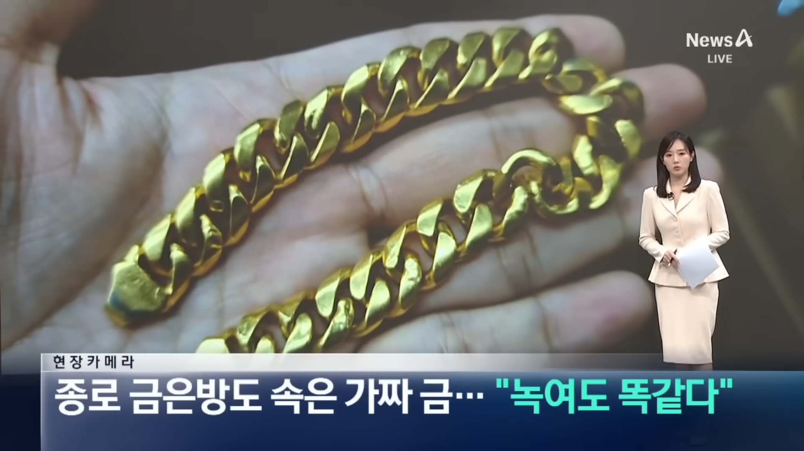
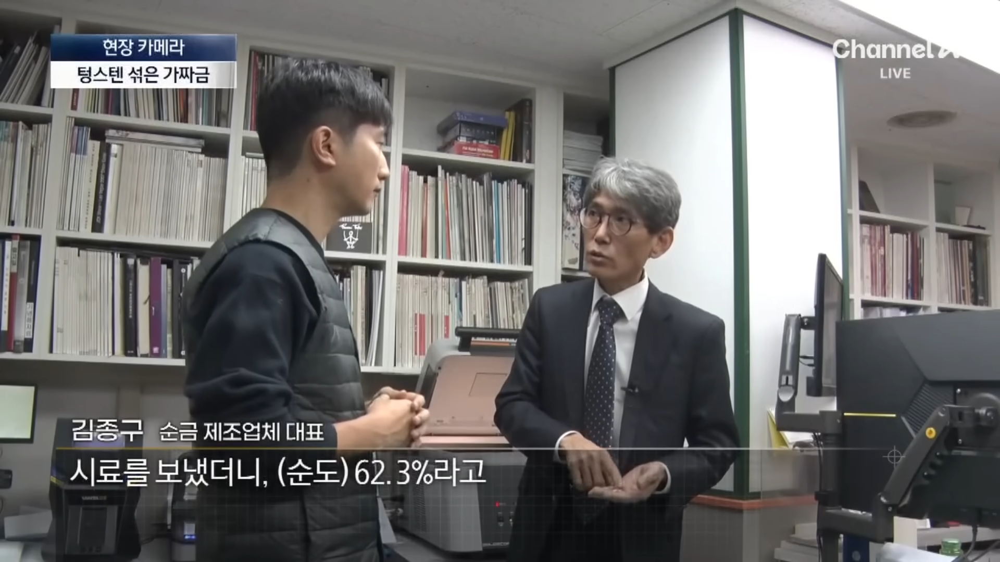
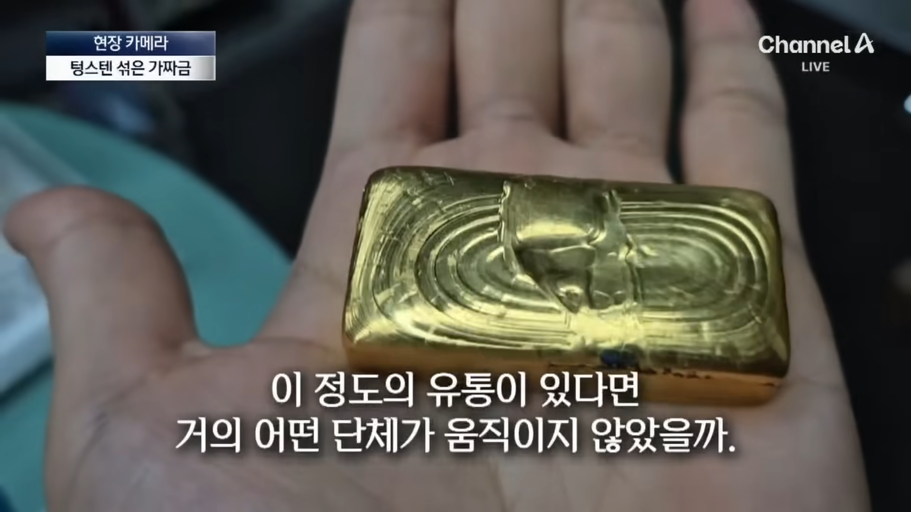
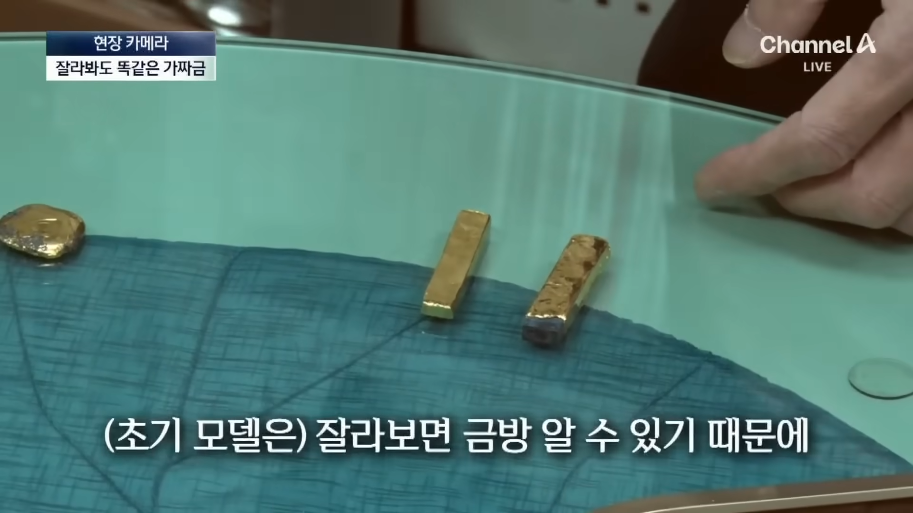
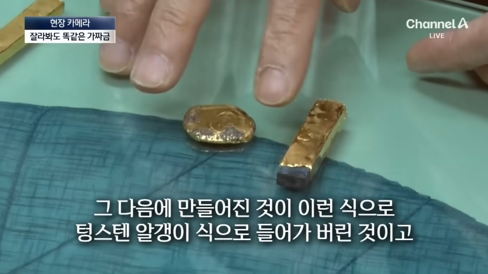
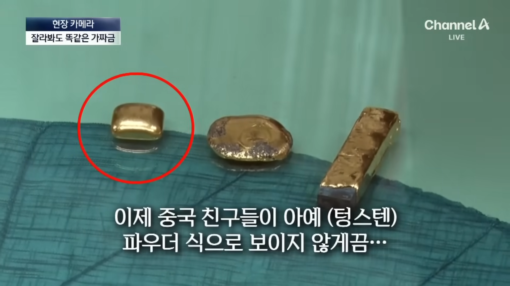
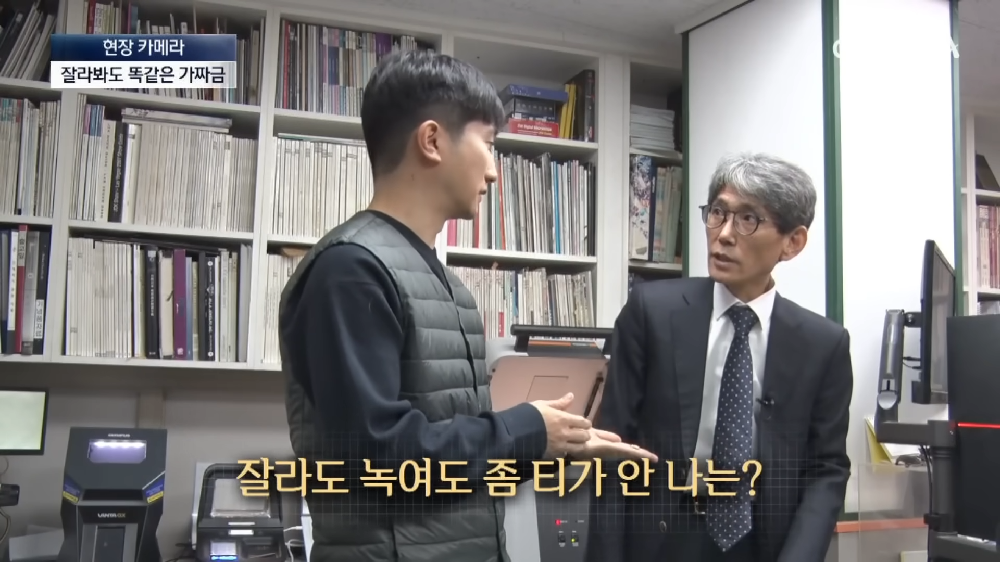
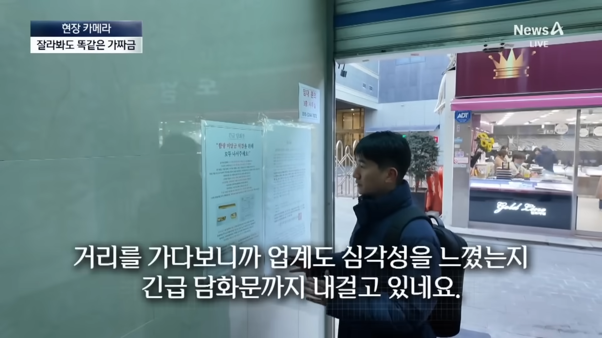
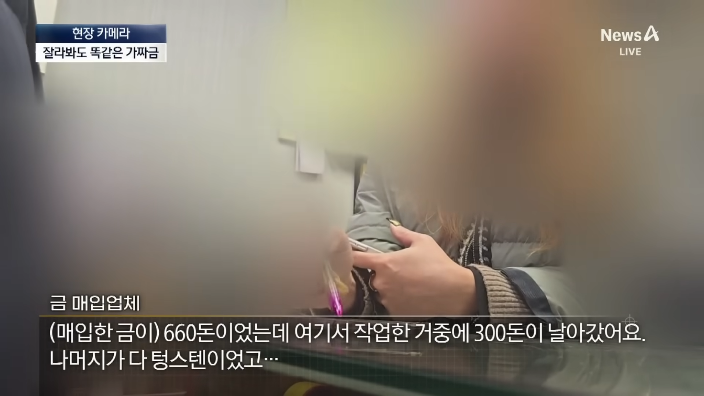
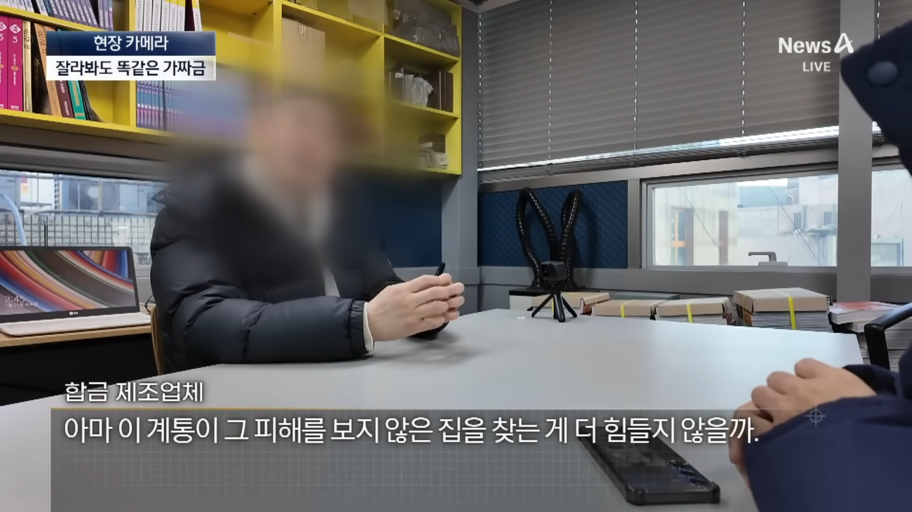
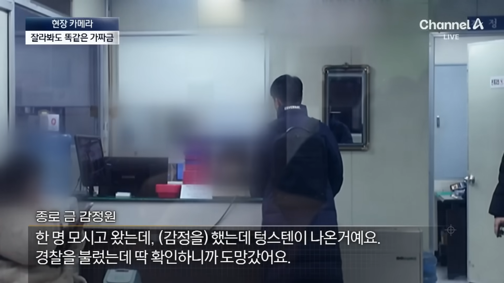
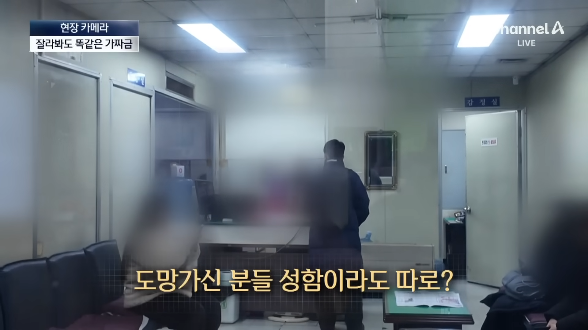
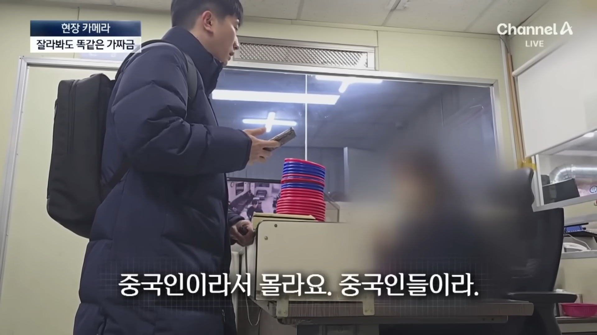
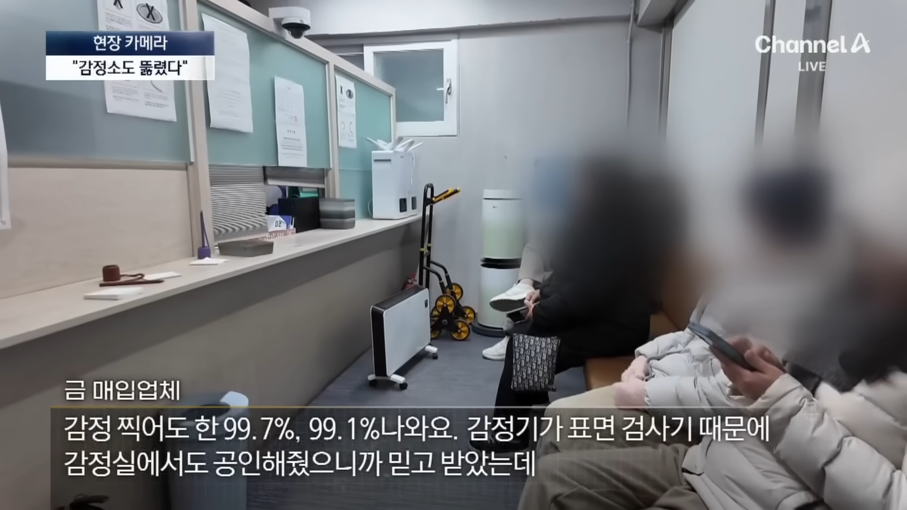
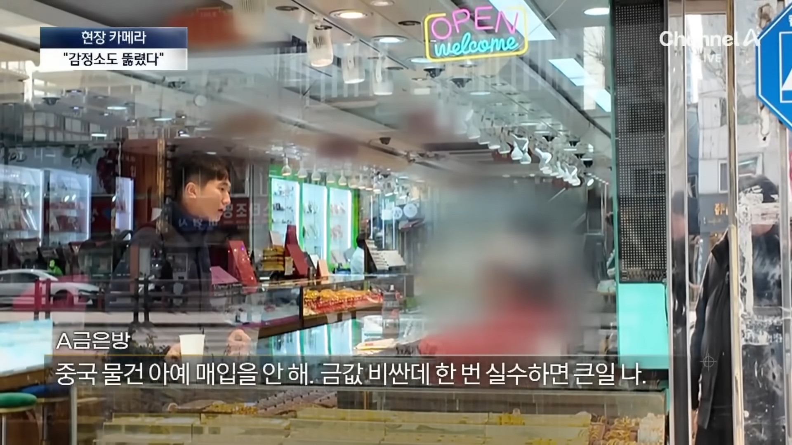
https://youtu.be/VipXDcBGgtk?si=jmGX0fnj9vv8yvGM
진짜 이 새끼들은 사기치기가 패시브로 장착된듯...ㅋㅋ
제 정신이면 중국산 금 같은건 안 사겠지만 다들 조심해라
주변 어르신들도 혹시 여행가서 금 싸다고 샀다면 사기일 가능성이 농후하다고 봐야..ㄷㄷ
완전히 녹인 후, 휘휘 저어서 검사해야 확인되겠네 ㄷㄷ